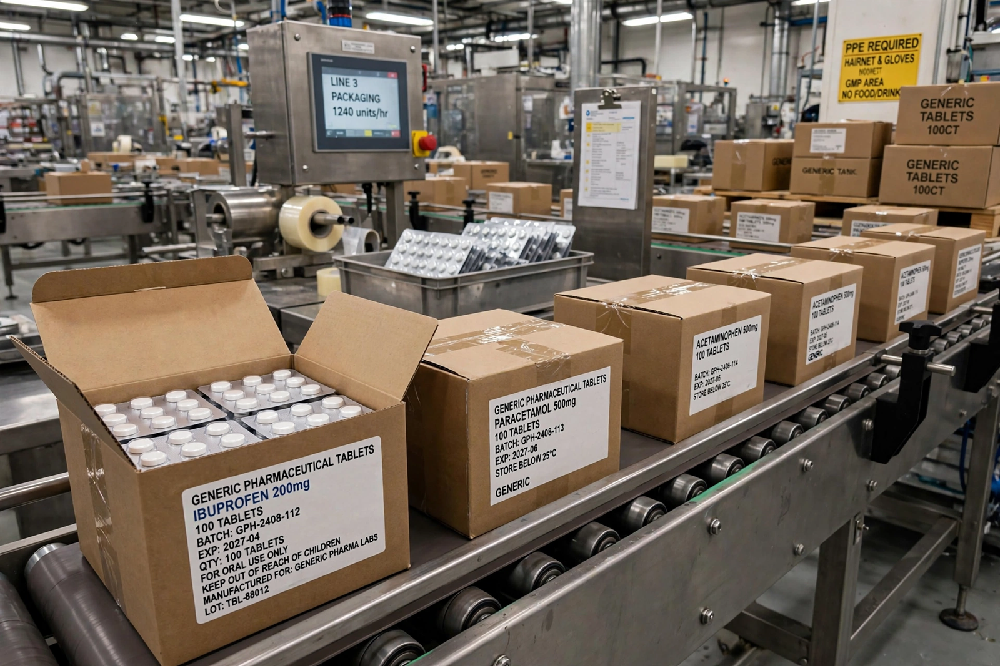

A compulsory license is a licence granted by a government that allows a third party to use an intellectual property right — most often a patent or copyright — without the rights holder's consent, in exchange for payment of a set royalty. Compulsory licensing limits the exclusivity that IP normally confers and is used to promote competition, access to medicines, and the dissemination of cultural works.
In music, the best-known compulsory licence is the mechanical licence in US law: once a song has been recorded and distributed, anyone may record their own version — a derivative use in a limited sense — by paying the statutory royalty rate. Similar statutory licences govern cable retransmission of broadcast signals and certain webcasting. The Berne Convention permits member states to impose compulsory licences for broadcasting and for recording musical works, subject to equitable remuneration.
Patent systems commonly allow compulsory licences where a patent is not worked locally, where dependent patents are blocked, in national emergencies, or to remedy anti-competitive practices. The Paris Convention (Article 5A) recognises the right to legislate against abuses such as failure to work. In the United States there is no general compulsory licensing statute, but the government may use patented inventions subject to paying "reasonable and entire compensation" (28 U.S.C. §1498), and courts may deny injunctions in favour of ongoing royalties, notably after eBay v. MercExchange.
Article 31 of TRIPS permits compulsory licensing of patents subject to conditions, including prior efforts to obtain a voluntary licence (waived in emergencies) and adequate remuneration. The 2001 Doha Declaration affirmed members' freedom to use these flexibilities to protect public health, and a 2003 waiver, later made permanent as Article 31bis, allowed countries lacking manufacturing capacity to import generics produced under compulsory licence elsewhere. Thailand, Brazil and India have issued or threatened licences for antiretroviral and other medicines; India's first, in 2012, covered the cancer drug sorafenib (Nexavar), cutting its price dramatically.
Pharmaceutical and technology companies argue that compulsory licensing weakens incentives to invest in research and is often sought for industrial-policy rather than access reasons. Public-health advocates reply that the flexibility is integral to the TRIPS bargain, is used sparingly, and that the credible threat of licensing has repeatedly induced voluntary price reductions.
See also: Patent, Copyright, TRIPS Agreement, Invention.